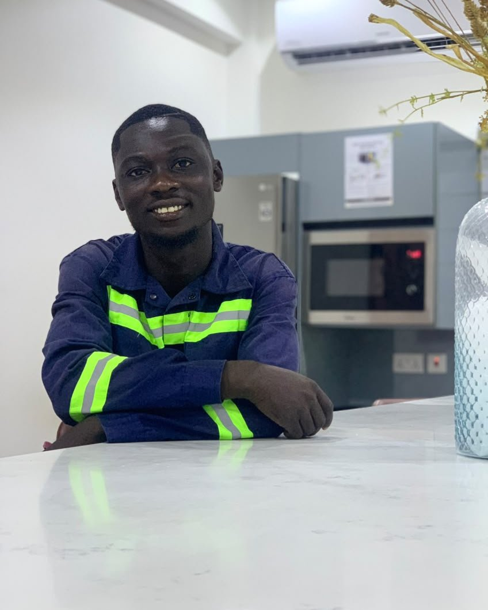

Benjamin Ansah
C.E.O & Founder, N&B Solutions

At a glance
Diploma in Electrical Engineering · Former Operations Manager at GreenPro Commercial Ghana · over 10 years in the cleaning and laundry industry
The C.E.O of N&B Solutions, Mr Benjamin Ansah, is a dedicated and experienced entrepreneur with a strong background in cleaning, laundry services, operations management and technical education.
His career has been built around the practical side of this business — running operations, managing teams, keeping quality consistent and looking after customers — rather than only the theory of it. That experience is what N&B Solutions is built on.
Areas of expertise
- Cleaning operations
- Laundry management
- Customer service
- Staff coordination
- Quality control
- Business operations
Education & experience
From technical training in Takoradi to running operations for a commercial cleaning company.
Education
-
2017
Omega School, Kasoa
Completed his basic education.
-
Secondary
Mankessim Senior High Technical School
Continued his secondary education.
-
Tertiary
Takoradi Technical University (TTU)
Obtained a Diploma in Electrical Engineering.
Professional career
-
Career
Operations Manager — GreenPro Commercial Ghana
Gained valuable practical experience in the cleaning and laundry industry, developing expertise in cleaning operations, laundry management, customer service, staff coordination, quality control and business operations — roughly 10 years of experience in the industry.
-
2025
Founded N&B Solutions
Driven by his experience and his passion for providing quality cleaning and laundry services, he established his own business. The company was founded with the aim of providing reliable, professional, affordable and customer-focused cleaning and laundry services to individuals, households, offices and other businesses.
Strategic direction, hands-on standards
With his combination of technical education, management experience and extensive industry knowledge, the Founder provides strategic leadership and operational direction to N&B Solutions, with a strong commitment to quality service delivery and customer satisfaction.
In practice, that means the standards set at the top are the standards on the job: a team that arrives when it says it will, work that is checked before it is called finished, and a business that would rather keep a client for years than win a job once.
Our vision
To become a trusted and professional cleaning and laundry service provider known for quality, reliability and customer satisfaction.
Our mission
To create employment opportunities, build a sustainable business, and provide affordable, convenient and high-quality cleaning and laundry services.
Founded
N&B Solutions was established in 2025 and is a registered company in Ghana, based in Apollo, Takoradi.
Clean today, fresh tomorrow.
One-off job or a standing contract — send us the details and we'll come and assess it free of charge.